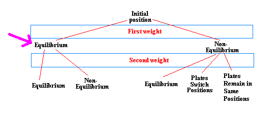
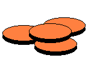
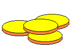

Step two



Group 1
Group 2
Group 3
Suspicious coins
Good coins
Weigh 2 coins from the suspicious group against 2 good coins
If the coins are in equilibrium, the false coin is in the remaining group of 2 coins.
If the coins are not in equilibrium, then the remaining group contains only good coins
click here
click here